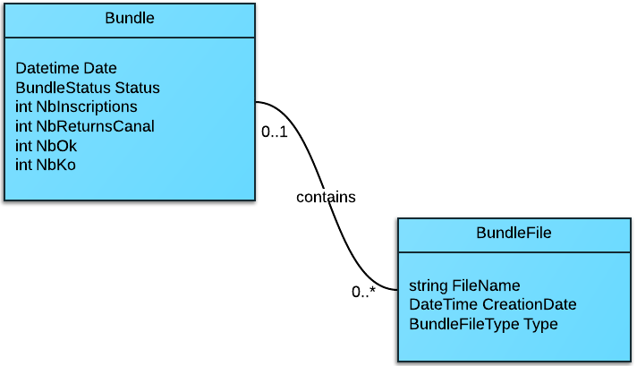

Retour d'expérience
RAPP
Ecran de Monitoring Collecte Canal+
Simon BUDIN / GitHub
Sommaire
Contexte du projet 
Code First 
Web Api 
Angular JS 
Contexte du projet
RAPP est une agence de marketing et communication digitale basée à Saint-Ouen


Clients de RAPP


Jeu Canal + Collecte
Objectif pour Canal+ : remplir sa base de données d'emails


Intervenants du projet
CANAL+
Récupère les prospects, peut déterminer si un prospect est valide
RAPP
Développe le jeu et les services associés
TradeDoubler
Amène des joueurs sur le jeu grâce à des sites affiliés
Problématique principale du projet :
CANAL+ doit rémunérer TradeDoubler pour les inscrits au jeu qu'il ne connaissait pas déjà.
La Moulinette
Service Windows tournant chez RAPP sur le serveur du jeu

3 actions quotidiennes principales :
- génère la liste des inscrits du jour et l'envoie à Canal+
 récupère la liste transformée par Canal+ (statuts "déjà inscrit Canal+")
récupère la liste transformée par Canal+ (statuts "déjà inscrit Canal+") génère une liste pour TradeDoubler (leads valides) et lui envoie
génère une liste pour TradeDoubler (leads valides) et lui envoie
En pratique...
Les fichiers envoyés sont des fichiers csv et xml sur des serveurs ftp
Fichiers envoyés sur des FTP
- CSV "IN" généré et envoyé à Minuit
- CSV "OUT" reçu vers 12h10
 XML généré à la volée (jointure entre csv "OUT" et base locale)
XML généré à la volée (jointure entre csv "OUT" et base locale)
Mécanique de la moulinette


L'écran de monitoring
Objectif
Contrôler la création et les échanges de fichiers
Comment
En maintenant à jour une liste de "Bundles" et de "BundleFiles"
Bundle
Groupe de 3 fichiers quotidiens
Csv "IN", Csv "OUT" et Xml
L'écran de monitoring
- Bundles triés par semaine
- Chaque Bundle a une date, un statut et des métadonnées
- Fichiers Horodatés avec lien de prévisualisation

Panel de prévisualisation

Comment c'est fait ?

Architecture

 Entity Framework 6 - Code First
Entity Framework 6 - Code First- ASP.Net - Web Api 2
- AngularJS
Fonctionnel simple
Un bon prétexte pour tester des technos !
EF Code first

POCO
DbContext
Workflow
Conventions & Ajustements
POCO
Plain Old CLR Object
Aucune référence à l'ORM

Diagramme de classes
Bundle

BundleFile

Enums

DbContext
Brique de base d'EF
Représente une session d'accès à la base de données
CollectContext

On hérite de DbContext
Un DbSet par table


Workflow
Pour créer/modifier la base
On créé des migrations
Une migration décrit le différentiel dans la base de données par rapport à la migration précédente.
Modification du modèle = Migration
En pratique...

On utilise Package Manager Console

Enable-Migrations


A ne faire qu'une fois
Fichier Configuration.cs

La méthode Seed peut être utilisée en dev pour préremplir des données
Add-migration


Fichier de migration

Update-Database

Paramètres utiles
- verbose - précisions sur actions effectuées
- force - en cas de perte potentielle de données
- script - prévisualisation du script généré
Connection Strings
La ConnectionString porte le nom du contexte

Si pas de ConnectionString valide trouvée -> LocalDb

Connection Strings
Pour éxécuter les commandes
1. Projet de démarrage = celui contenant la connection string
2. 'Défault project' dans PMC

Pièges : Initializers
Désactiver l'initializer par défaut (sinon danger)

Conventions & Ajustements
Convention de clef primaire

Propriété Int ou Guid terminant par Id ou ID, ou avec l'attribut Key
Convention de relations
Il est conseillé de fournir la clef de l'entité liée en plus de la collection
Deux moyens d'ajuster les propriétés du modele
Dans les POCO directement avec des attributs
Dans la définition du contexte, Fluent API
Les attributs : Key, StringLength, NotMapped, Required
Il en existe d'autres
La fluent API : contraintes définies en redéfinissant OnModelCreating dans le contexte

Permet des modifications plus poussées
ASP.NET
Web Api 2
Routing
Formatters
Filtres d'action
Routing
Fondé sur le verbe HTTP
- GET pour récupérer des données (liste ou élément)
- POST : pour enregistrer un nouvel element
- PUT : pour modifier un element
- DELETE : pour supprimer un élément
Il dicte quelle action effectuer dans le contrôleur
Mapping HTTP to Action (msdn)

Deux méthodes de routing
1. Dans WebApiConfig (similaire à ASP.NET MVC)

On ne spécifie pas l'action, qui est déduite par le moteur grâce au verbe HTTP
Action GetAllBundles

Appelée avec /api/bundles/
GET + pas de paramètre = action retournant un IEnumerable
2. Par attribut

Appelée avec /api/bundlefiles/[path/to/file.ext]
GET + Paramètre "path" = type de retour object
Paramètre path de type "catch-all" mappant le filepath
Exemple

Formatters
Paramétrage des types Mime
XML ou Json ?
C'est le client qui choisit, avec le header HTTP 'Accept'
(AngularJS permet de modifier ce header)
Accept: application/xml

Accept: application/json = JSON


On peut supprimer un Formatter

On peut indenter le JSON (pas par défaut)

On passe de

à

Filtres d'action
Code transverse
On peut appliquer des filtres comme dans ASP.NET MVC à plusieurs niveaux
- Action - attribut au dessus de la méthode
- Controleur - attribut au dessus de la classe
- Application - à l'aide du singleton GlobalConfiguration
Filtre Global d'authentification

Installation

AngularJS
AngularJS is what HTML would have been, had it been designed for building web-apps. Declarative templates with data-binding, MVW, MVVM, MVC, dependency injection and great testability story all implemented with pure client-side JavaScript!
AngularJS
Hello World
Structure simplifiée
Les Services
Les directives custom
Hello World
Avec Jquery

Avec AngularJS

Structure simplifiée

Le controleur alimente le $scope à l'aide de services
Le $scope représente le ViewModel
Il notifie la vue et le controleur : binding bi-directionnel
MVC ?

MVVM ...

MVW !

Mise en application

Module et Contrôleur
Le module "application"

C'est la brique principale, un peu comme un assembly en .NET
Le controleur

On injecte ses dépendances dans le controleur
Cette méthode d'injection résiste à la minification
Variable showLoaderTree utilisée pour gérer le chargement
Côté HTML
On charge les scripts

On définit la zone d'influence d'Angular

On utilise le $scope dans la vue

Directives ng-show et ng-hide gérant la visibilité
Directive ng-repeat répétant les éléments d'une liste
Filtre sur les bundles défini 'inline'
Directive custom 'bundle' décrite plus loin
Les Services
Ils permettent d'encapsuler l'API
Ils fournissent une bibliothèque réutilisable
Le bundle service

On injecte le module $http pour l'Ajax
L'objet "promise" du module $q permet une gestion asynchrone élégante
Le module $rootScope fournit une référence au $scope principal de l'application
Directives
Les directives étendent l'HTML.
Angular gère 3 types
- Attributs html (comme ng-show, ng-repeat, ng-app)
- Classe d'élément
- Nom d'élément
Directive custom 'bundle'
De type Element, encapsule un objet Bundle

Définition de la directive
La directive s'ajoute au module principal comme les autres types d'objets Angular

Template de la directive
Le template est un fichier html différent réutilisable.

On voit qu'on peut charger d'autres directives dans le template
Bibliographie
Code First
Code first to new Database @ Msdn.com
Web Api
Getting Started with Web Api 2
Angular JS
AngularJS Fundamentals in 60min
Avez-vous des questions ?
Outils
Graphiques : LucidChart
Versionning : Git + Github
Présentation HTML : reveal.js + nodeJS
SublimeText 3
Visual Studio 2013
Adobe Photoshop CS6